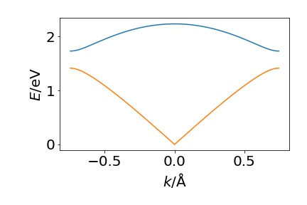
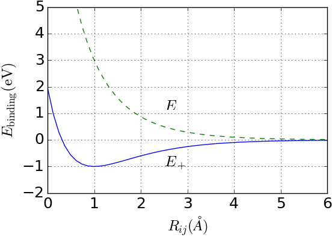
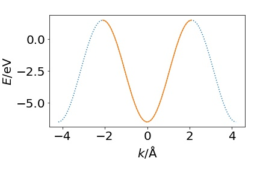
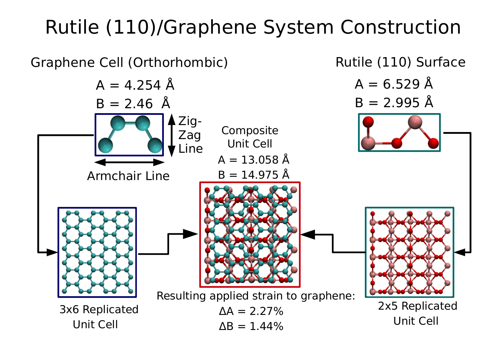
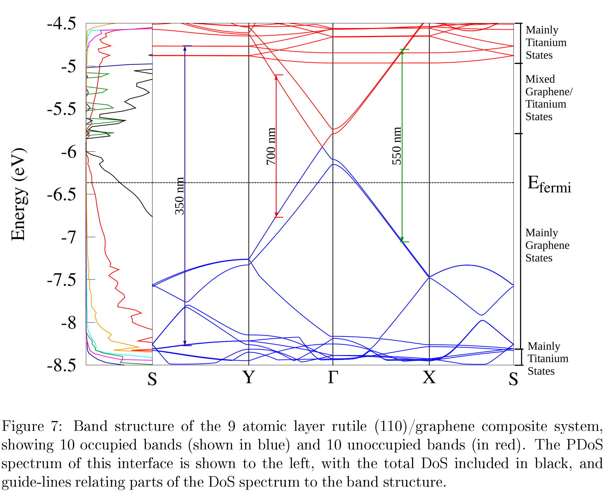

Recap, Quasiparticles, Magnetism¶
Waves in Crystals¶
Look back at our investigation of vibrations and electronic bands in 1D.
We found, by solving Newton's equations of motion for $N$ atoms in a cell, that the solutions were running waves - and for each allowed wavevector there will $N$ allowed frequencies of oscillation:
$$ \omega_{\pm}^2 = \frac{\kappa_1 + \kappa_2}{m} \pm \frac{1}{m}\sqrt{(\kappa_1 + \kappa_2)^2 - 4 \kappa_1 \kappa_2 \text{sin}^2 (ka/2)} $$if we plot these 'dispersion relations' we get something like this:

Sound waves¶
Sound waves correspond to very long wavelength oscillations - which means very small wave vector.
We can make a small angle expansion to get
$$ \omega = 2 \sqrt {\frac{\kappa}{m}} |\text{sin}(ka/2)| \approx 2 \sqrt {\frac{\kappa}{m}}|ka/2| = \sqrt {\frac{\kappa}{m}} a |k| $$(and phase velocity, which equals group velocity in this case when the dispersion is linear), $$ \nu = \omega / |k| = \sqrt{\frac{\kappa}{m}}a $$
This gives the speed of sound waves in our 1D crystal.
If we replace $k$ in 1D with $\textbf{k}$ in 3D, there will be different speeds in different directions for some materials.
Thermal Expansion¶
To understand thermal expansion this is not adequate, to appreciate this we need to look at out potential energy curve, and how it compares to a harmonic one. 
The curve is assymmetric. As temperature increases, the atoms will wander further to the right (long distance between atoms) than to the left (where repulsive interactions become very strong).This means that the average position of an atom $\left< x_n \right>$ will get larger, as temperature increases.
If we replace $k$ in 1D with $\textbf{k}$ in 3D, there will be different expansions and elasticity in different directions for some materials.
1D tight binding¶
These arguments about counting the number of states hold essentially without change to the 1D tight binding model.
From $N$ atoms, each with one atomic basis function, we get $N$ states dispersed in energy as $k$ changes.
In this case the states can accept 2 electrons each, due to Fermi-Dirac statistics applying to electrons because of the Fermionic character.
$$ E = (\epsilon + V_0) - 2t \textrm{cos}(ka) $$
Brillouin zone is a primitive unit cell of the reciprocal lattice¶
We saw that we only had distinct solutions to the 1D case in the $k$ range $-\pi/a \leq k \lt \pi/a$. Very similar arguments hold in 3D.
Equivalently to the 1D case, physical waves are unchanged by the addition of any reciprocal lattice vector $\mathbf{k} \to \mathbf{k} + \mathbf{G}$.
The equivalent in 3D to only plotting the solutions in the range $-2 \pi / a \leq k \lt 2 \pi /a$ is to only work within ranges in the first Brillouin zone.
We define the Brillouin zone like this:
Easier to see in 2D

When we go to 3D it can be quite complicated

Band structures¶
There is, unfortunately, a whole language and notation for dealing with the reciprocal lattice. In particular for particular lattices, there are a list of 'special' k-points that get labelled things like $X, L$ and directions linking points $\Lambda, \Sigma$ ... You only need to know of their existance, and the reason for using them.
We want to be able to visualise the dispersion relations of the bands - how the energy levels change with $k$. We do this by calculating the energy levels at particular k-points that follow a path through the primitive cell of the reciprocal lattice

Along a given direction we get something that often looks rather to our 1D tightbinding chain - look at the $\Gamma$-point, which is what the $\mathbf{G} = 0$ point is called conventionally. As it moves to the left, towards the $L$ point, it traces out something that looks almost identical to the tight binding model.
Now, however, we many bands at each k-point. These occur because there are many atomic orbitals on each atom in a real system.
The basic rules still apply though. Within the a Brillouin Zone the will be as many k-states as there are unit cells in our system. And the states are filled up to the fermi-energy.
Density of States¶
If we sum up all the states that appear in an energy window, we can flatten these 'spaghetti diagrams' into 1D, which shows where there are energy levels that electrons can occupy:
Consider a rather complicated system - graphene on Titanium Oxide.

We get a combined band structure on the right of the figure below, and if we sum up the states at given energies we get the DOS on the left:  This is a very complicated structure - but there are some features of interest that we might come back to. Note some 'transitions' are marked. Remember in atoms electrons can shift between energy levels when a photon of energy $\hbar \omega = \Delta E$, a similar picture holds here. When bands have energy levels at appropriate energies it may be possible to absorb light energy.
Metals, Semiconductors, Insulators¶
If there is an energy gap between the highest filled states and the next set of states, then you have an insulator, or if the gap is less than about 5 eV, a semiconductor.
If there is no energy gap between empty and filled states, we have a metal.
Or in very crude cartoon forms

|

|

Very narrow bands can lead to unusual properties - we'll look at this at the end of the lecture.
Quasiparticles¶
Polarons¶
Are the interaction of an electron (or hole) with vibrations of the crystal (phonon).
This is sometimes talked about as an electron digging itself a potential well.
A material where identification of these trapped electrons is of interest is TiO$_\text{2}$, because of its use in solar cells and photocatalysts.
|
My calculations
|
STM images
|
Optical properties¶
Photons carry a very small amount of momentum compared to that carried by electrons in crystals (why?).
This means that the optical spectrum consists of transitions between bands with $\Delta k = 0$.
|
|

|
It is possible to have weaker transitions where $\Delta k \neq 0$ and other process occur - such as the creation or annhilation of phonons (vibrations) at the same time. Leads to a temperature dependence of the absorption.

Excitons¶
When an electron is excited, it leaves behind a 'hole', with the 'shape' of the wavefunction of the electron that was excited.
Normally, in many materials both the electron and hole are quite delocalised, so there is only a very minor coulomb interaction between them. The energy of interaction is meV, and they are spread out over 10s of nm. Largely, for many purposes they can be ignored.
In some materials, like TiO$_\text{2}$ for instance, it is possible that the electron and hole can be very localised, and there is a strong interaction, leading to the formation of a bound Exciton.
The are also partially responsible for the colour of many materials.
Solar Cells / photocatalysis¶
rely on separating the electrons and holes using solar light.
The enemy is recombination, where the electron falls back into a hole.

|

|
Breakdown of band picture¶
Up to now we have assumed that we can calculate the energy levels, then populate them with electrons.
This is not really true - the electrons do interact - primarily by the coulomb interaction.
This means that the energy levels change as electrons are placed into them.
Magnetism¶
If we look at the DOS for Iron and Nickel
we see that there is an extremely high density of electrons - and they occupy 'd' states.

These are rather tightly bound to the nuclei, for slightly complicated reasons, and so they have rather lowing hopping integrals. This means that instead of being spread over the whole crystal, it is not a bad idea to start thinking of them as being localised onto individual atoms. Then putting two electrons onto the same site is quite energetically unfavourable.
This is just a first approximation, there is still an overlap between the electrons on neighbouring atoms.
If two electrons have the same spin direction, then they cannot occupy a shared orbital, which in turn means they will tend to be further apart, and have a lower coulomb interaction. This is called the exchange interaction.
It is sometimes expressed using the Heisenberg Hamiltonian.
$$ \mathbb{H} = - \frac{1}{2} \sum_{(i,j)} J_{ij} \mathbf{S}_i \cdot \mathbf{S}_j $$Unpaired electrons have a magnetic moment. As the electrons tend to have the same spin direction the moments align, and the local part of the crystal has a net magnetic moment. In this case $J_{ij}$ is positive. In some materials, NiO for instance, you can get effective antiferromagnetic coupling.
More complex are ferrimagnets, where there are several different metals with different magnetic moments in the magnetic unit cell. If they cannot couple completely to remove the magnetic moment this is referred to as ferrimagnetism.
Grains - grain boundaries¶
Even ferromagnets are not generally magnetic on a macroscopic scale.
Crystals are generally not just a single crystal, but a set of smaller ones squished together in some way.
The magnetic moments of the different grains is random, and sums to zero.
A Magnetic field (like another magnet) can align the electron spins, and induce magnetism in a ferromagnet.

Amorphous Materials¶
not all materials are crystalline with order. One large category is glasses, which are intrinsically disordered: Take SiO$_\text{2}$ quartz,
|
|
|
This will result in properties intermediate between crystals and molecules. It is also possible to perform diffraction measurements on amorphous materials (or liquids). What is measured is then a distribution function of the likely distances between atoms.